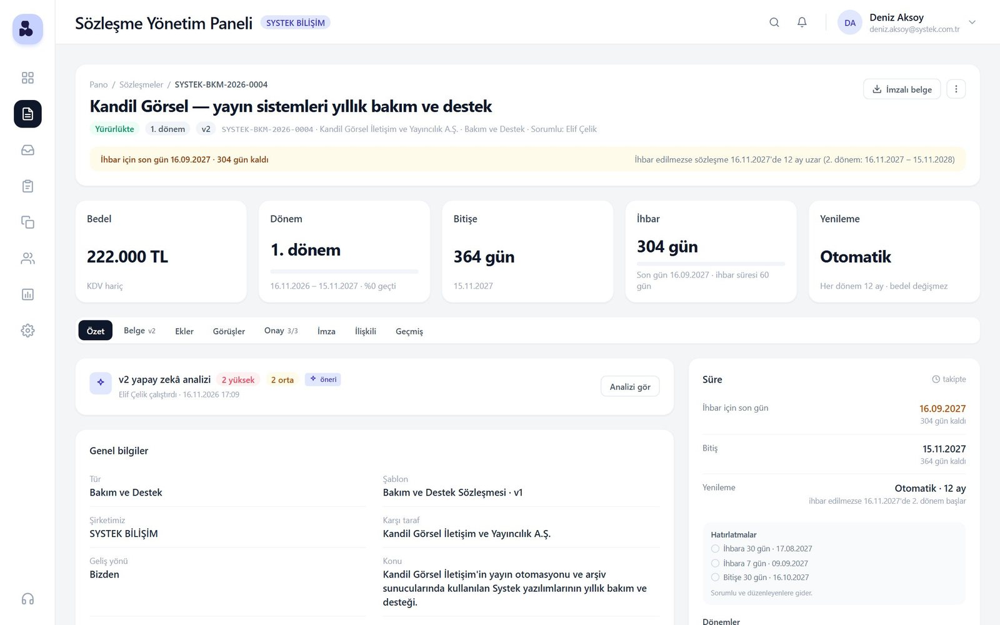
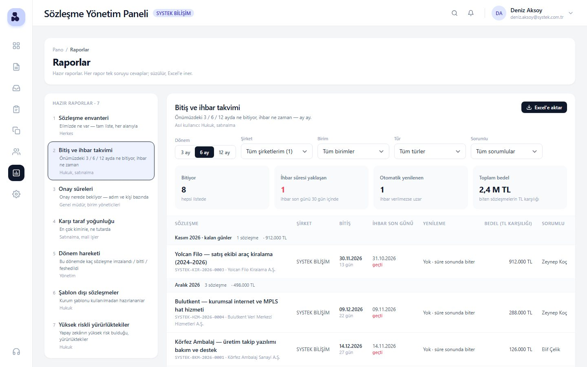
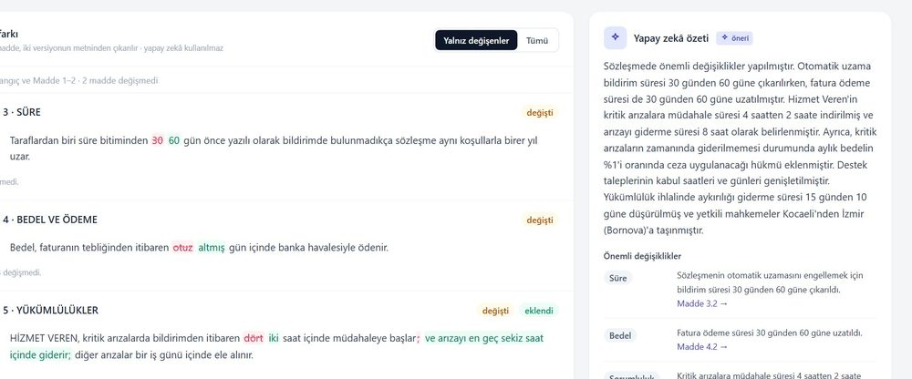
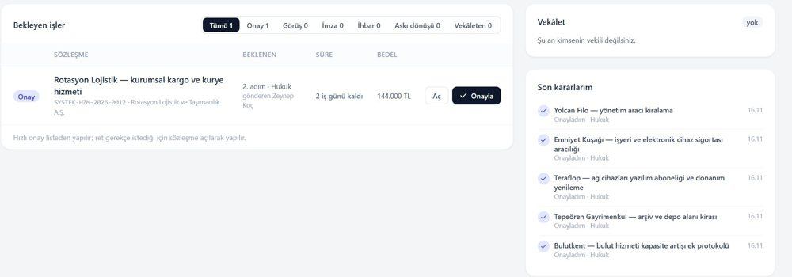
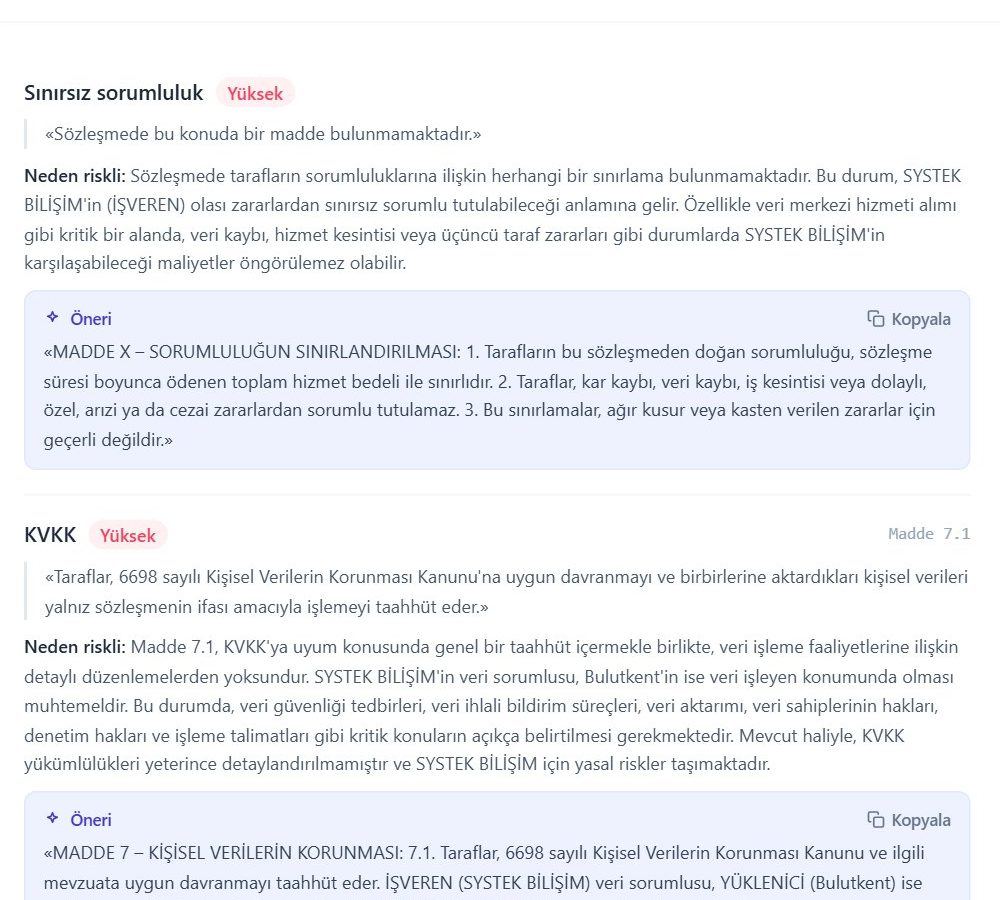

Ana sayfa / Süre takibi ve raporlar

Süre takibi ve raporlar
Hiçbir ihbar süresi kaçmaz; yönetimin sorduğu her sorunun hazır raporu var.
Sözleşme yürürlüğe girdiği an süre takibi başlar. İhbar son günü ve otomatik yenileme dönemleri kendiliğinden hesaplanır; ihbardan 30 ve 7 gün, bitişten 30 gün önce sorumluya ve düzenleyenlere e-posta gider.
Askıya alınan ya da feshedilen sözleşmenin tarihi, gerekçesi ve yazısı kartında durur. Ek protokolle bedel ve süre güncellenir; değer geçmişi saklanır.
Yedi hazır rapor, kurumun en sık sorduğu soruları cevaplar. Her rapor şirket, birim, tür ve sorumluya göre süzülür ve Excel'e iner. Toplamlar kişinin rapor yetkisine, satırlar görebildiği sözleşmelere göre hesaplanır.
Hazır raporlar
- Sözleşme envanteri
- Bitiş ve ihbar takvimi
- Onay süreleri
- Karşı taraf yoğunluğu
- Dönem hareketi
- Şablon dışı sözleşmeler
- Yüksek riskli yürürlüktekiler
- Her rapor Excel'e iner

Diğer özellikler

Hazırlık ve müzakere
Onay ve imza
Yapay zekâ ile analizDemo isteyin,
size ulaşalım
Formu doldurun; birkaç gerçek sözleşmeniz ve bir onay akışınızla çalışan bir deneme ortamı için sizinle iletişime geçelim.
Yeniköy Merkez Mah. Vatan Cad.
Teknopark Sitesi No: 83/A C26
Başiskele / Kocaeli